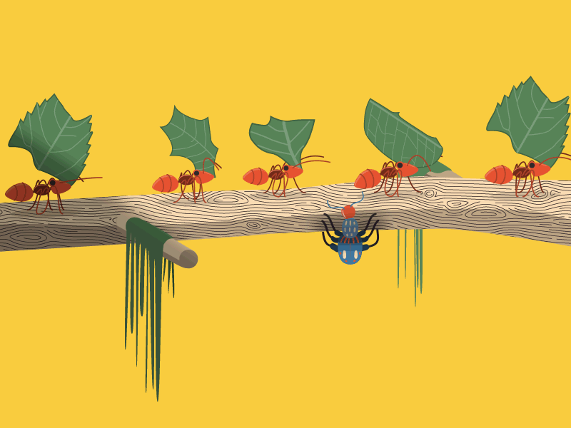
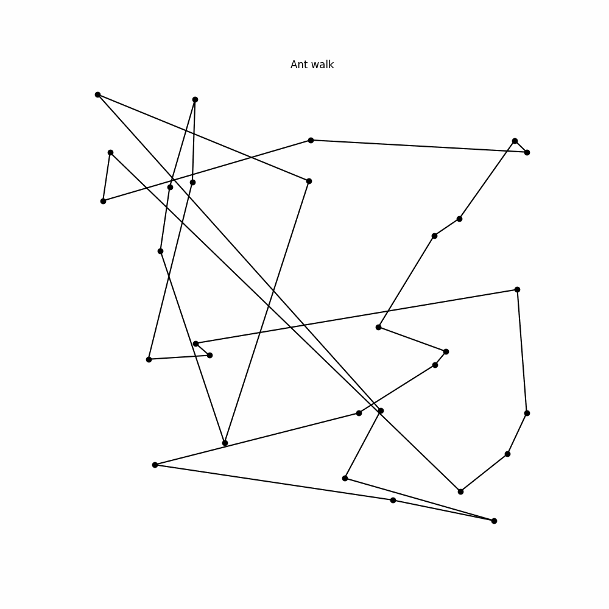
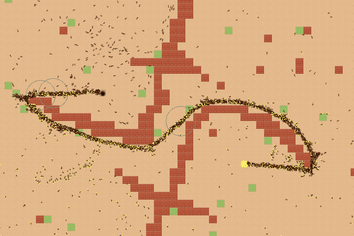

محاكاة خوارزمية مستعمرة النمل (Ant Colony Optimization)
كيف تعمل خوارزمية مستعمرة النمل؟
خوارزمية مستعمرة النمل (ACO) هي خوارزمية تحسين مستوحاة من سلوك النمل في العثور على أقصر مسار بين عشها ومصادر الغذاء. تترك النمل مادة كيميائية تسمى الفيرومون على المسارات التي تسلكها. تميل النمل إلى اتباع المسارات ذات تركيز الفيرومون الأعلى، مما يؤدي بمرور الوقت إلى تشكيل أقصر مسار ممكن.
فيما يلي الخطوات الأساسية للخوارزمية:
- التهيئة: يتم تهيئة جميع المسارات بكمية صغيرة من الفيرومون.
- بناء الحلول: تبني كل نملة مسارًا كاملًا خطوة بخطوة، باختيار الخطوة التالية بناءً على مزيج من المسافة والفيرومون الموجود.
- تحديث الفيرومون: بعد بناء جميع النمل لمساراتها، يتم تحديث كمية الفيرومون على المسارات، مع زيادة الفيرومون على المسارات القصيرة وتقليله على المسارات الأطول.
- تبخر الفيرومون: يتبخر جزء من الفيرومون مع مرور الوقت، مما يسمح للخوارزمية باستكشاف مسارات جديدة وتجنب التوقف عند الحل المحلي الأمثل.
- التكرار: تتكرر الخطوات السابقة لعدد محدد من التكرارات أو حتى التقارب.
إعدادات الخوارزمية
جاري تشغيل المحاكاة...


